All living organisms need food. The food and
the method of obtaining food vary from
organism to organism.
Rabbits eating tender
grass, parrots pecking
at and flying away
with
the
grains,
snakes
swallowing
rats, bears climbing
trees to gobble up the
honey laden combs….
How diverse
these sights
are!
Haven’t you
observed the diverse food of organisms
around you and the methods they adopt to
collect it? Compile a list of the organisms
you have observed, and their respective
food. Present it in the class room.
Page 82
Basic Science
Name of the
organism
Cow
Food
●
●
Goat
●
●
Cat
●
●
Bear
●
●
Rabbit
Grass
Leaves
Mice
Honey
●
●
Human
●
●
Cooked rice
Add more organisms and expand the list. With the help of the list, classify the
living organisms into herbivore, carnivore and omnivore. Write it in the
Science Diary.
Haven’t you understood that each animal’s food is different? All living
organisms obtain food and utilize it.
Nutrition
Nutrition is the process by which organisms obtain and utilize food.
Every organism obtains the energy necessary for its vital activities from their
food. The food we consume undergoes various changes within our body.
How is the ingested food utilized by the organisms?
Let’s examine what happens to the food we consume and how it is utilized.
Ingestion
There are 5 stages in nutrition. The first stage is ingestion. The food first
reaches the mouth. What are the changes that occur to food in the mouth?
82
Page 83
Figure fig_ch05_p083_01 (Page 83)
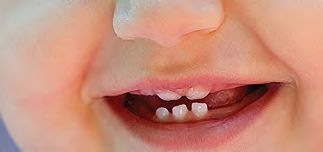
Figure fig_ch05_p083_02 (Page 83)
Class - VII
●
It mixes with saliva.
●
What is the role of lips, tongue and teeth in ingestion?
Observe the experiences on your own while consuming food.
Teeth
Teeth are used to masticate food. The structure and arrangement of teeth is
suitable for biting, chewing and grinding food.
Observe the picture.
Enamel
Transverse section of a tooth
Enamel is the outer most layer of the tooth. It is also the hardest substance in
the human body.
Milk Teeth and Permanent Teeth
Do you still have your first set of teeth?
Will an infant’s first set of teeth last throughout its life?
Milk Teeth
In infants, teeth development starts around
the age of six months. These teeth are known
as milk teeth. Ten milk teeth each develop at
the upper and lower jaws (in total-20).
Permanent Teeth
Permanent teeth are those that replace milk teeth when they fall off. If
permanent teeth break or fall off, new teeth will not grow in its place.
The food we eat - are they
the same? Some are large
and hard while some
others are soft. Various
types of teeth assist us in
biting
and
tearing,
chewing and grinding
different food items.
Molars
Premolars
Canines
Incisors
Observe the picture and
try to understand the different types of teeth and their position.
Observe the table depicting different types of teeth, their position, numbers
and uses. Analyse the table and record in the Science Diary the position and
use of different types of teeth.
Different types of teeth
Position and number
Uses
Incisor
Eight incisors in front;
four in the upper jaw
and four in the lower
jaw.
To bite and tear
food items.
Canine
Four canines adjacent to
incisors on both sides;
two in the upper and
two in the lower jaws.
To tear and
cut food.
Premolar
Eight premolars adjacent to canines; two on
both sides, in the upper
and lower jaws.
To chew
and grind food.
Molar
Twelve molar teeth near
the premolars on both
sides at the back. Six in
the upper jaw and six in
the lower jaw.
The generic name for molars and premolars is molars.
How many teeth does an adult have? Examine the table and write the use and
number of each type of tooth in the Science Diary.
Observe the picture below. Find out the distinctive features of teeth in
carnivorous and herbivorous animals and understand how closely the shape
of the teeth is related to their food habits.
The canines of
carnivores are
much developed
and it helps in
biting and tearing
meat.
Incisors in herbivores help to bite and tear the food and premolars
and molars, to masticate the food.
Tooth Decay
Teeth play a major role in masticating food. Hence
they should be protected with care. But in many
people tooth undergoes decay.
Examine the picture.
Let’s do an experiment to find out how tooth decays.
Damaged teeth
Marble is a hard material made of calcium compound. Take a small piece of
marble and observe using a hand lens. Put it in dilute hydrochloric acid. After
some time take it out and again observe using the hand lens.
What change do you observe in the marble piece?
It is seen that the marble has started to corrode. The reason is that acid has
reacted with the calcium compound in marble.
Similarly tooth enamel is also a calcium compound. It reacts with acid and
gets damaged gradually.
Let’s listen to a conversation between a child and her dentist.
Doctor, my sister has dental caries. What is the
reason for this?
If you don’t clean the mouth properly after having
food, bacteria will feed on the food particle struck
between the teeth. This will result in lactic acid
production. This is what damages the teeth.
Lactic acid is a very weak acid. How does it cause
tooth decay?
You know marble piece started to corrode when it
reacted with hydrochloric acid; likewise enamel,
which is a calcium compound, reacts with lactic
acid and causes tooth decay in the long run.
I clean my teeth thoroughly at night. But sometimes
after eating sweets I skip it. Is there anything wrong
in it, doctor?
No matter what food you eat, you should clean
your mouth well, especially after consuming sweet.
Otherwise it will accelerate the bacterial action.
Brush your teeth in the morning before breakfast
and at night, after dinner. Always clean your mouth
whenever you eat something.
86
Page 87
Figure fig_ch05_p087_01 (Page 87)
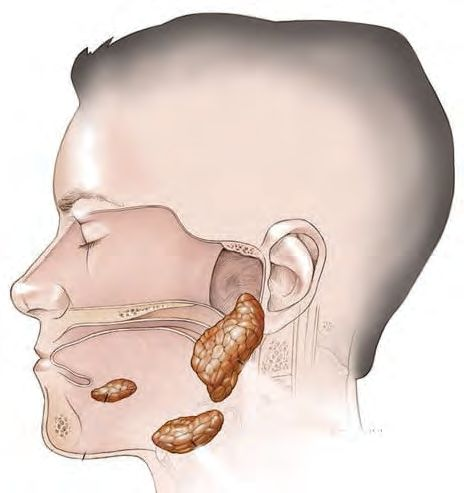
Figure fig_ch05_p087_02 (Page 87)
Class - VII
I understood many
things. I will follow these
things and will definitely
share this information
with friends and family.
Wouldn’t you like to know more about dental care?
Discuss in group and prepare questions to conduct an interview with a dentist.
Prepare a note based on the information obtained from the interview and
record it in your Science Diary.
So far we have discussed the importance of teeth in digestion. Now let’s
discuss the role of tongue.
Tongue
You have already learned in your previous classes that the taste buds on the
tongue help us to sense taste.
What are the other functions of the tongue?
•
Helps in swallowing.
•
Tongue helps to move food inside the mouth so that teeth can chew it.
•
There is saliva in the mouth. Saliva also plays an important role in the digestive
process. Observe the picture and identify from where it is produced.
Look at the picture and identify to which part
of the digestive system does the chewed food
reach next?
Let’s go on a journey with food.
To which part of the digestive system does
food first reach from the mouth?
Look at the picture. Locate the position of the
oesophagus through which the chewed food
reaches the stomach.
What is oesophagus?
The oesophagus is a long tube that connects the mouth to the stomach. It is
made of muscles.The wave-like movement of the oesophageal wall helps food
to reach the stomach. This movement is called peristalsis.
Food in the Stomach
You know that digestion of food begins in the
mouth and it reaches the stomach through the
oesophagus.
Stomach
Digestion is the second stage of nutrition. It
takes place partially in the stomach where food
remains for 4 to 5 hours. Due to the peristaltic
movement of the stomach wall, the food is
turned into a paste form. Gastric juice, produced
by glands in the stomach wall facilitates
digestion. Stomach wall also produces small
amount of hydrochloric acid. This helps in
protein digestion and pathogen destruction.
The partially digested food in the stomach then moves on to the small intestine.
Food in the Small Intestine
Human small intestine is five to six meters long. It is here that the second stage
of nutrition (digestion) is completed. Absorption of
nutrients also takes place in the small intestine.
Bile produced by the liver and the pancreatic juice
produced by the pancreas are mixed with partially
digested food in the first part of the small intestine.
This completes the digestion of food.
Small intestine
Pancreas
Liver
How do the nutrients in the digested food get absorbed into the blood?
Villi are the small finger-like projections present in the wall of small intestine.
Nutrients in the digested food are absorbed into the blood through the villi.
This is the third stage in nutrition and the
Villi
process is called absorption.
The nutrients that reached the blood become
part of the body. This is the fourth stage of
nutrition and this process is called assimilation.
The digested food will also have substances
not needed by the body.
Let’s see how they are eliminated.
89
Page 90
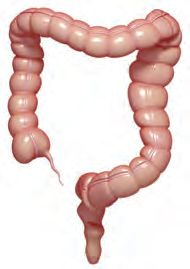
Figure fig_ch05_p090_01 (Page 90)
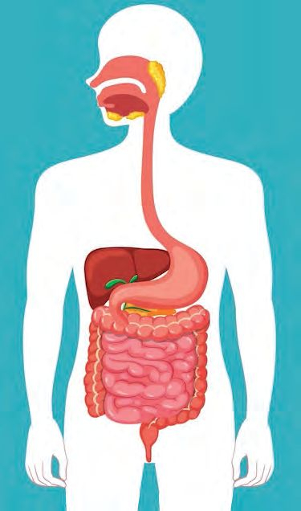
Figure fig_ch05_p090_02 (Page 90)
Basic Science
Large intestine
Rectum
After the absorption of nutrients, the residues
in the digested food move to the large intestine.
Water and some salts are absorbed into the
large intestine from the digestive waste as
needed by body. Later the digestive waste
stored in the rectum is egested through the
anus. This is the fifth stage of nutrition and this
process of digestive waste removal from our
body is called egestion.
Let’s complete the flow chart showing the
various stages of nutrition.
Ingestion
Assimilation
Observe the diagrammatic representation of human digestive system. Write in
your Science Diary the names and functions of the labelled parts.
A
B
C
D
E
F
90
Page 91
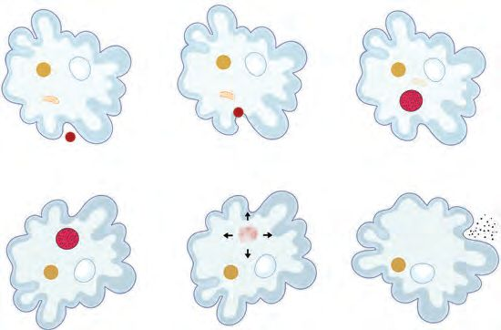
Figure fig_ch05_p091_01 (Page 91)
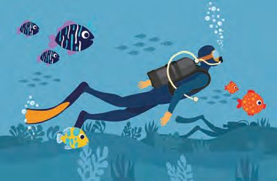
Figure fig_ch05_p091_02 (Page 91)
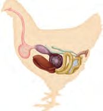
Figure fig_ch05_p091_03 (Page 91)
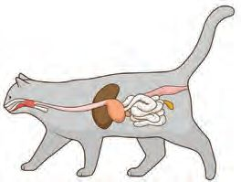
Figure fig_ch05_p091_04 (Page 91)
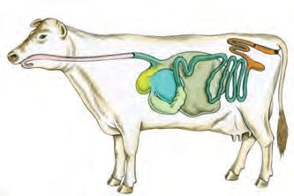
Figure fig_ch05_p091_05 (Page 91)
Class - VII
Nutrition in other Organisms
The picture illustrates the process of nutrition in the single-celled amoeba.
Analyze the picture and record in the Science Diary the various stages of
nutrition in amoeba.
Food particle
Absorption
Ingestion
Digestion
Assimilation
Egestion
Let’s observe the pictures of the digestive system of some animals.
Digestive System
Hen
Cat
Cow
Do the digestive system of these animals have any similarity with our digestive
system? Discuss.
Humans can survive without food for
some days. But can we sustain life
without breathing?
Observe the picture.
A man and some fishes are swimming in
the water. How long can this man remain
in water without the support of an
oxygen cylinder? Why are we unable to take oxygen from water, like fish?
You can easily guess the reason. It is due to the difference in the respiratory
system of man and fish.
91
Page 92
Figure fig_ch05_p092_01 (Page 92)
Basic Science
Human Respiration
How long can you hold your breath? Let’s do a simple activity.
Please stand up. Take a deep breath. Now try to hold your breath as long as
you can. Who has been able to hold breath for long? Couldn’t hold your breath
even for a minute, could you?
Let’s learn more about breathing.
Press your hand on your chest and take a deep breath in and a deep breath
out. What are the changes that your body is experiencing? Don’t you feel the
air coming in and going out? What else do you feel?
Inhalation and Exhalation
Inhalation is the process of taking air into the lungs. Exhalation is the
process of movement of air from lungs to outside.
How does respiration occur in humans?
Let’s construct a model to understand the working of lungs.
Materials required
Y tube, one big balloon, 2 small balloons, a plastic bottle with its bottom part
cut off, string, rubber band, paper ball.
Plastic bottle
Y tube
Rubber band
Small balloon
Big balloon
String
92
Page 93
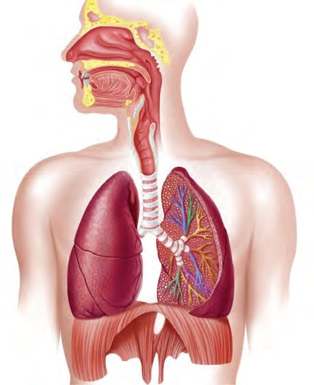
Figure fig_ch05_p093_01 (Page 93)
Class - VII
Method of construction
Let's make a model as shown in the picture.
Fix the two small balloons in the Y tube and insert it through the lid of the
bottle as shown in the figure. Place a small paper ball tied to a rubber band, in
the middle of the big balloon and tie it with a long string. Attach the other end
of the rubber band to the Y tube. Invert the big balloon and attach at the bottom
of the bottle with the free end of the string outside.
Prepare the model with the help of your teacher.
Procedure
Gently pull down the string tied to the big balloon.
Don’t the smaller balloons expand when the larger balloon is pulled down?
What happens when the string is released?
(While pulling the string it will be better to hold the Y tube so as to keep it
steady.)
•
When the string attached to the large balloon is pulling down, the two
small balloons inside the bottle begin to expand. Why?
•
Why do the small balloons shrink when the string attached to the large
balloon is released?
Isn’t there a similarity between the model you have made and the functioning
of human lungs.
Observe the picture.
Trachea
Nostril
Bronchi
Bronchiole
Alveoli
Diaphragm
93
Page 94
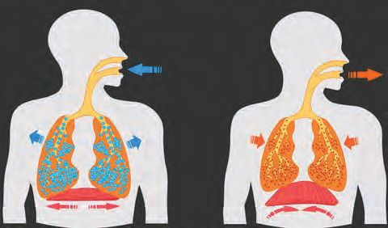
Figure fig_ch05_p094_01 (Page 94)
Basic Science
Human lungs are placed in a space inside the chest called the thoracic cavity.
Below it is the abdomen. Diaphragm is the muscular wall that separates the
thoracic and abdominal cavities. It is slightly bent upwards and is domeshaped. In the above model, the big balloon stretched over the bottom of the
bottle can be imagined as the diaphragm and the two smaller balloons, as the
two lungs.
The contractile activities of human lungs and of the model you made are
almost similar.
The diaphragm and the muscles attached to the ribs play a role in the
contraction and expansion of human lungs.
Observe the picture and find answers to the questions given below. Write
them in the Science Diary.
• What happens to the
diaphragm during
inhalation and
exhalation?
• When does the thoracic
cavity increase in volumeduring inhalation or
exhalation?
During inhalation, the diaphragm contracts and flattens. This increases the
volume of the thoracic cavity. The atmospheric air enters the lungs and the
lungs expand.
During exhalation, the diaphragm relaxes and both the diaphragm and the
lungs return to their previous positions. The air from the lungs moves out.
Respiratory Tract
Air entering through the nostrils reaches alveoli of the lungs. Respiratory tract
is this air passage from nostrils to lungs.
Complete the flowchart of the respiratory tract using the indicators.
Alveolus
How is the passage of air through the respiratory tract made possible? Examine
the illustration below.
Inhalation
Exhalation
The diaphragm contracts and
flattens slightly.
Rib cage lift upwards.
The air from the lungs
moves out.
The volume of the thoracic
cavity increases.
The lungs expand.
The volume of the thoracic
cavity decreases and lungs
contract.
Atmospheric air enters
the lungs.
The diaphragm returns to the
previous state and the rib cage
moves down.
95
Page 96
Basic Science
Write in the Science Diary the different stages of inhalation and exhalation.
Observe the table showing the levels of various components in the inhaled
and exhaled air.
Inhaled air
Level
(in percentage)
Exhaled air
Level
(in percentage)
Oxygen
21
Oxygen
15
Carbon dioxide
0.04
Carbon dioxide
4
Nitrogen
78
Nitrogen
78
Moisture
0.96
Moisture
3
Is the level of all components in inhaled and exhaled air the same? Which all
components show difference in percentage?
Which of the components are in higher level and lower level in exhaled air
than in inhaled air?
Analyze your findings and find out which gas is utilized by us in respiration.
Incidents of Food Getting Stuck in the Trachea
Have you come across news items in the newspaper about breast milk getting
stuck in the trachea, causing harm to small children. What first aid should be
given in such cases of choking on food or breast milk?
If the food is stuck in the trachea, that person
should be asked to cough forcefully. With the
force of cough the food will be ejected.
As shown in the picture, keep the person who has
difficulty in breathing in a slightly bent position.
With both hands, press firmly on the affected
person's stomach from behind. If necessary,
repeat this process for a few more times.
If the affected person is a baby, place the baby
face down on your forearm as shown in the
picture. Your arm should be resting on your
thigh. With the palm of your other hand, give the
child forceful blows between the shoulder blades.
Provide medical attention if necessary.
For Further Reading
Smoking and Health Issues
Smoking impairs the functioning of lungs. Carbon, tar, and other toxic
substances present in the cigarette smoke can remain in the lungs. This
can cause persistent cough. Tobacco contains chemicals that cause
cancer.
Diversity in Breathing
Paramecium is an aquatic unicellular organism that cannot be seen with the
naked eye. Analyze the picture and find out how gas exchange takes place in
a protozoan like paramecium.
Paramecium
Cell membrane
Oxygen
Carbon dioxide
97
Page 98
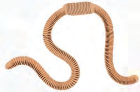
Figure fig_ch05_p098_01 (Page 98)
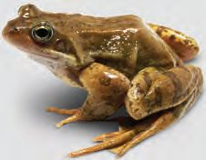
Figure fig_ch05_p098_02 (Page 98)
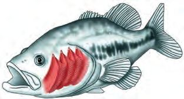
Figure fig_ch05_p098_03 (Page 98)
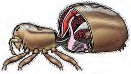
Figure fig_ch05_p098_04 (Page 98)
Basic Science
Paramecium takes in oxygen dissolved in the surrounding water through the
cell membrane and gives out carbon dioxide.
Analyze the table and understand the diverse types of respiration in organisms.
Diversity in Respiration
Organism
Part that helps in respiration
Earthworm
Moist skin
Fish
Gills
Frog
Lungs (while on land)
Moist skin (under water)
Spider
Book lungs
Respiration
The process through which organisms receive oxygen from their
environment and eliminate carbon dioxide is called respiration.
You have learned that plants also respire like other organisms.
98
Page 99
Class - VII
Read the note given below and find the answer to the questions
Respiration in plants
Plants also absorb oxygen from the atmosphere and release carbon
dioxide. Stomata are fine pores, found in leaves and tender stem
that help in gas exchange in plants.
•
Which gas do plants take in during respiration?
•
Name the gas released by plants during respiration?
•
Where does the gas exchange take place in plants?
From this unit we have understood two important activities that take place in
our body such as digestion and respiration. You are also convinced about the
importance of maintaining healthy habits that will help in proper functioning
of digestive and respiratory systems. Follow them in your daily life.
Let’s Assess
1. Which of the following combination is correct?
a. Goat, Horse, Crow, Pigeon (Herbivores)
b. Leopard, Vulture, Elephant, Lizard (Carnivores)
c. Man, Hen, Monkey, Peacock (Omnivores)
2. In which of the following organ digestion is completed?
a. Mouth b. Small intestine c. Large intestine d. Stomach
3. What are the precautionary steps to be taken to prevent tooth decay?
4. Compare the dentition of a six year old child and that of an adult.
5. A person is lying down and eating food. Do you think the food will
reach the stomach? Why?
99
Page 100
Basic Science
Extended Activities
1. Like man, other organisms also breathe. Observe the body movements
of cat, cow etc during inhalation and exhalation.
2. Breathe into a mirror. What do you see? What is the reason?
3. List out the ideas to be covered in the seminar to be organized in the
school on the topic, “Respiratory System and Health” and display them
on the bulletin board.
4. Have you ever noticed air pump in the aquarium? Find out its
significance.
5. With the help of your teacher organize a medical camp at school to get
more information about dental care.